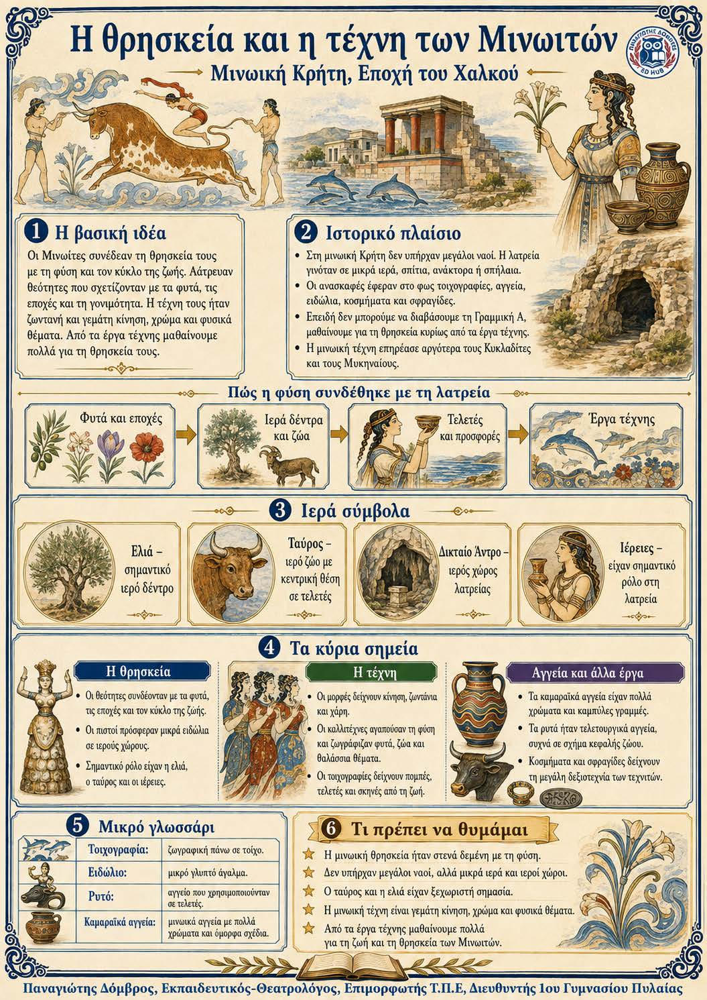

Πληροφοριογράφημα ενότητας
Το πληροφοριογράφημα αυτής της ενότητας δεν έχει ανέβει ακόμη. Οι σημειώσεις παραμένουν πλήρως διαθέσιμες.

Κεφάλαιο Β΄ · Μινωική Κρήτη, Εποχή του Χαλκού
Η θρησκεία των Μινωιτών ήταν στενά δεμένη με τη φύση και τον κύκλο της ζωής. Οι γυναικείες θεότητες, το ιερό δέντρο και ο ταύρος είχαν σημαντική θέση. Επειδή δεν μπορούμε να διαβάσουμε τη μινωική γραφή, η τέχνη είναι η βασική πηγή μας. Τα έργα ξεχωρίζουν για την κίνηση, τη ζωντάνια και τα θέματα από τη φύση.
Θεότητες και κύκλος της ζωής ↓ Ιερά δέντρα, ελιά και ταύρος ↓ Μικρά ιερά και σπήλαια ↓ Χοροί, τελετές και ταυροκαθάψια ↓ Η τέχνη μάς δίνει πληροφορίες
